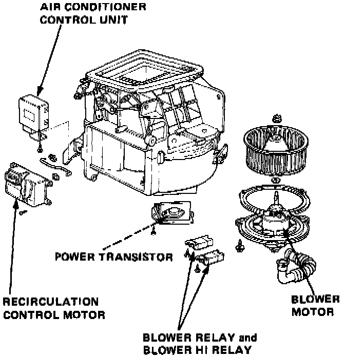

Operation CHARM
: Car repair manuals for everyone.
Home
>>
Acura
>>
1986
>>
Legend V6-2494cc 2.5L SOHC FI
>>
Repair and Diagnosis
>>
Relays and Modules
>>
Relays and Modules - HVAC
>>
Blower Motor Relay
>>
Locations
Blower Motor Relay: Locations

Blower Relays
Located on the underside of the blower housing, under the right side of the dashboard.